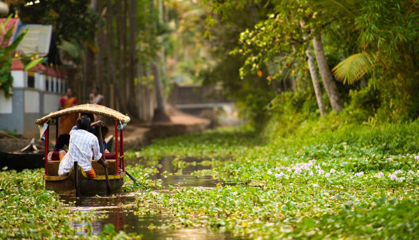

Located at the Western Ghats with an average elevation of 1700 meters above sea level, Munnar is a famous hill station in Kerala. The hill station enjoys a favorable and pleasant climate all year round and is famous for its lush green hills and tea plantations.September to March is the best time to visit Munnar because of pleasant weather. Summers (April - June) are a little warm, but one can still visit Munnar during this season. Monsoon season (July and August) experiences heavy rainfall which could hamper your travel plans and hence this period should be avoided.

Kochi, the southern city of Kerala has optimum temperatures throughout the year, which means visiting Kochi during any time of the year, would work for travellers. However, Best time to visit Kochi is said to be from the months of October to March which comprises of the winter season for the city. Summers and monsoon, although a tad difficult due to the extremes, are equally attractive in Kochi, especially for budget travellers
The town is among the oldest planned towns in India and is famous for its several backwater canals, beaches, paddy fields and lagoons. Alleppey is iconic for its houseboats cruises in the backwaters and attracts thousands of visitors each year.The best time to visit Alleppey is between October and February when the temperature is moderate (around 33°C), making it a perfect time to explore the city. Alleppey experiences monsoons between June and September.

Thiruvananthapuram is a major tourist centre, known for the Padmanabhaswamy Temple, the beaches of Kovalam and Varkala, the backwaters of Poovar and Anchuthengu and its Western Ghats tracts of Ponmudi and the Agastyamala. Quite popular for its calm and scenic beaches, the town of Kovalam, 16 Km away from Kerala's capital Thiruvanthapuram has an array of other tourist attractions worth a visit.

Back to top:Back to top
Channadivyaswapnika ©copyrights
contact us at my insta page!